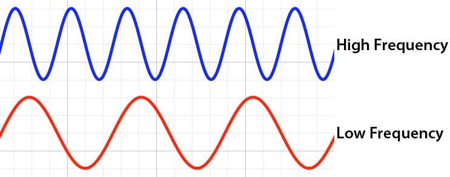
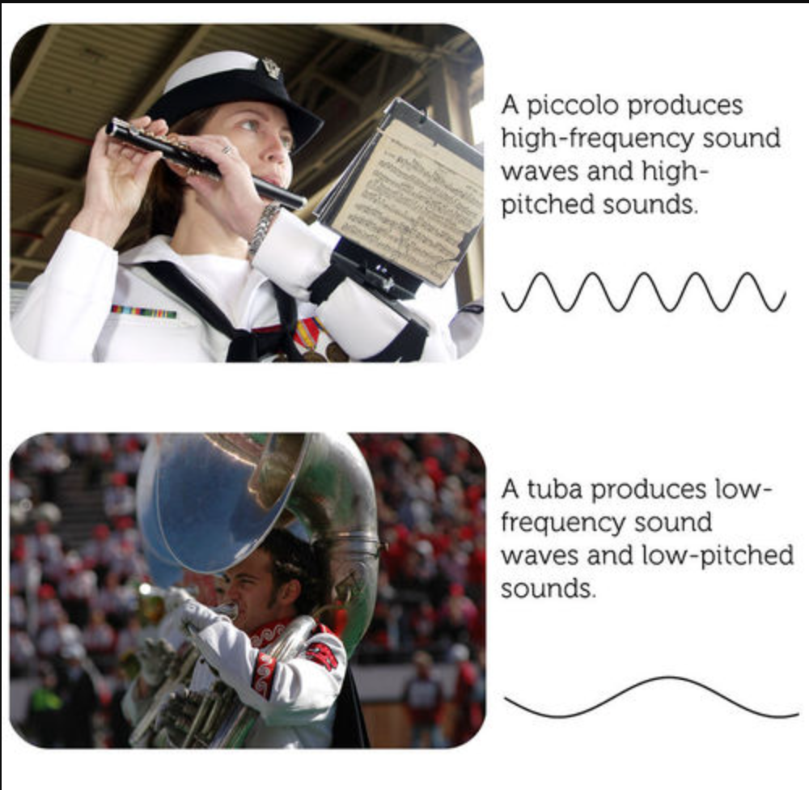
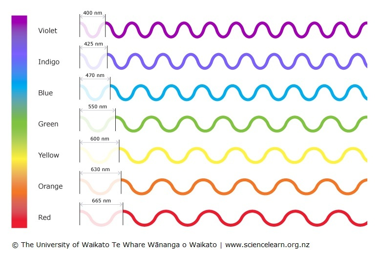

Welcome, Fellow Dreamer!
Hey there, artist! Imagine a place where every color you splash onto a canvas hums with its own tune, where reds growl low and violets sing high. That’s "Chromatic Symphony," a digital playground I’ve crafted just for souls like us who see the world a little differently. I’m Jamal Yusuf, and this is my love letter to synesthesia—that wild, beautiful mash-up where senses collide. Here, colors don’t just sit pretty—they sing, and sounds don’t just echo—they paint. Drag a gradient, tickle a piano, or let classic melodies wash over you as hues dance. You can even scribble your own tunes in text and watch them bloom into color! It’s all built with a sci-fi vibe—think neon glows and glassy panels—drawing from those trippy old Winamp visualizers and the organic chaos of generative art. Ready to dive in and let your imagination run wild?
The Magic of Sound and Light
 Let’s talk waves, my friend—because that’s where this all begins. Sound’s a vibration, a ripple through the air that tickles your ears. It’s measured in hertz (Hz)—beats per second. We humans catch anything from a deep 20 Hz rumble to a shrill 20,000 Hz squeak. In this space, I’ve zoomed in on 220 Hz to 880 Hz—low growls to bright chimes—because they feel alive and playable.
Now, light? That’s a whole other beast—electromagnetic waves zipping at terahertz speeds (THz, a trillion hertz!). Red light’s down at 430 THz/697 nm, slow and warm; violet’s up at 770 THz/389 nm, fast and electric. They’re way too speedy to hear, but what if we slowed them down, mapped them to sound? That’s the trick here: I’ve tied the rainbow—red to violet—to that 220–880 Hz range, so every shade you see has a voice. It’s not science-fact exact—it’s art-science magic, inspired by synesthetes who hear colors in their heads. Cool, right?
Paint with Sound
Grab this gradient and paint with your ears! Drag across it—red’s a low 220 Hz growl, violet’s a high 880 Hz chime. Toggle to "Discrete Mode" to snap to notes like A3 to A5, perfect for melody vibes. The display glows with your color and hums its frequency or note. Hit "Stop Tone" when you’re ready to hush it. It’s your sonic palette—go wild!
Sound Waves in Motion
Check this out—a living sketch of sound waves! Each tone you play ripples across this canvas, its height and speed showing the frequency. Low notes (like 220 Hz) stretch out lazy and wide; high ones (like 880 Hz) zip tight and fast. It’s like seeing the heartbeat of what you hear, a visual pulse for your sonic brushstrokes.
The Light Spectrum Unveiled
Here’s the rainbow laid bare! This canvas maps colors to their secret frequencies—red at 430 THz on the left, violet at 770 THz on the right. As you play tones below, a marker slides along, linking each sound to its color twin. It’s a peek into how light and sound can hold hands, even across their cosmic scales.
Tickle the Color Piano
This isn’t just a piano—it’s a rainbow you can play! Each key from A3 to A5 is splashed with a hue from the gradient. Tap one, and it sings its color—low reds to high violets. It’s like brushing a melody across a canvas, where every note shines and resonates. Let your fingers dance and see what tunes spill out!
Songs in Color
Pick a song and watch it bloom! We’ve got classics like "Twinkle, Twinkle" and pop culture hits like "Sweet Home Alabama" or "Happy"—each melody lights up the gradient as it plays, every note a splash of color. Hit "Play" to let them sing, "Stop" to hush them. It’s like watching a musical painting unfold—timeless tunes turned into vibrant strokes of light and sound.
Create Your Own Melody
Scribble your own tune here! Type notes like "C4 400, D4 400, E4 800"—note then duration in milliseconds, separated by commas. Give it a name, hit "Save Melody," and it’ll pop into the dropdown. Play it back and see your colors sing! Use notes from A3 to A5 (e.g., C4, D#4, G5) and durations like 400 or 800. Unleash your inner composer!